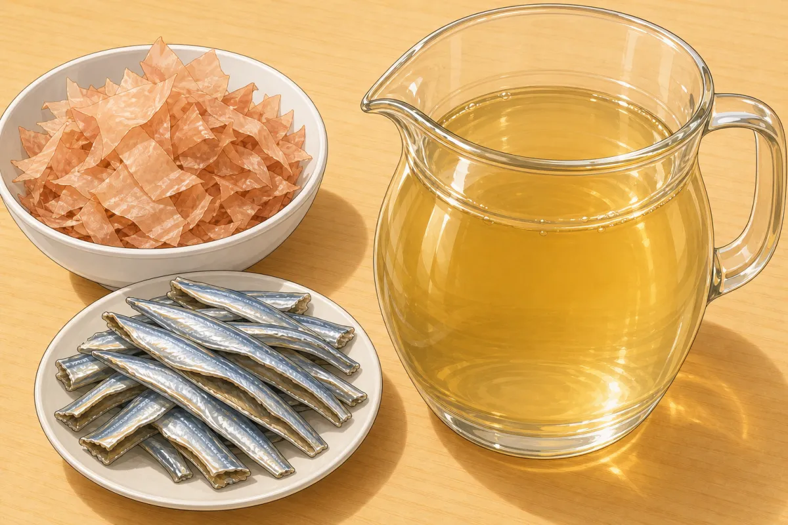
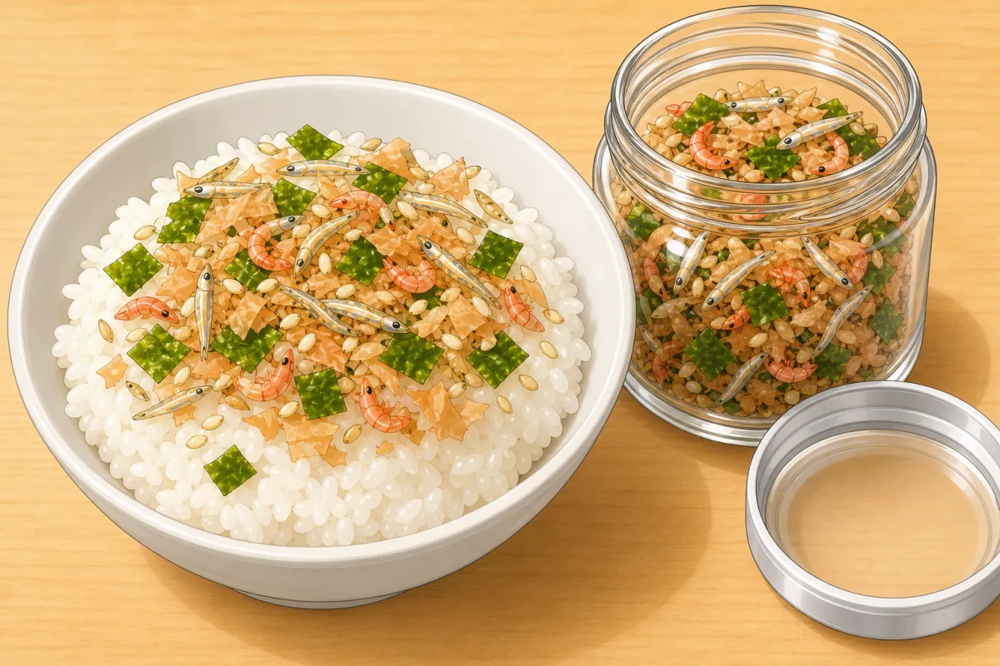
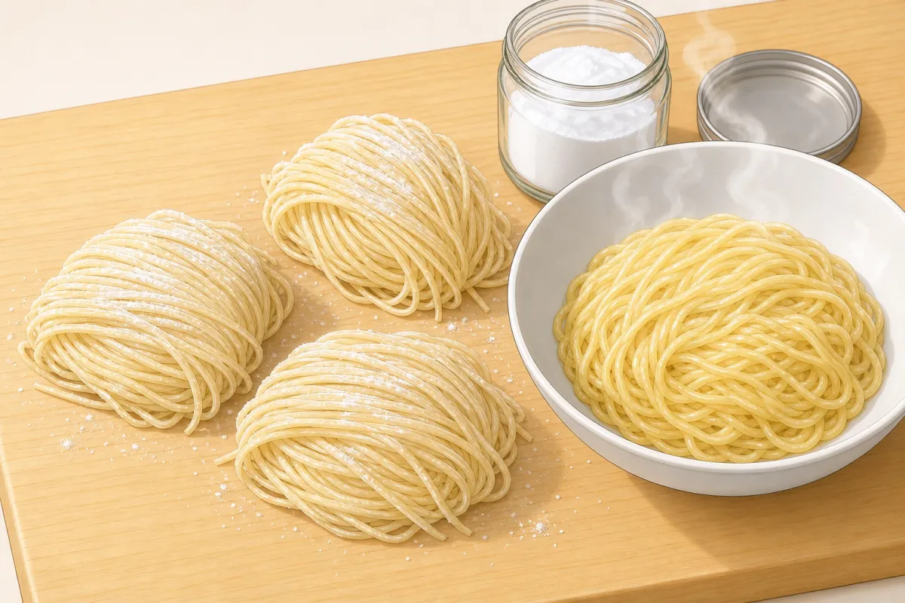
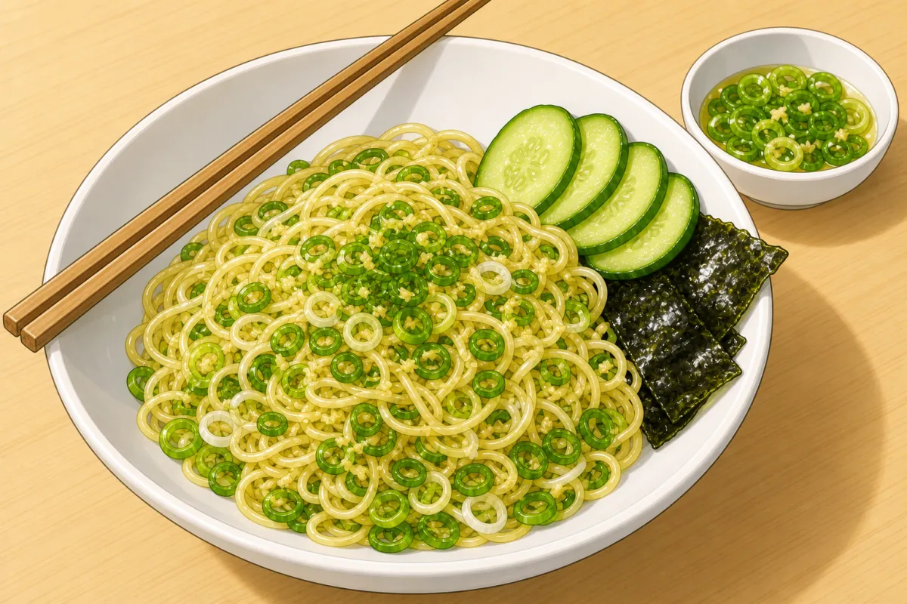
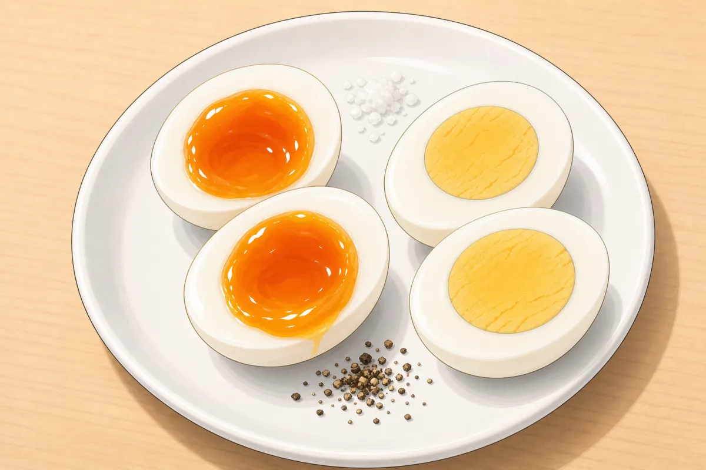

Recipes
Japanese basics and big projects, Korean kimchi, weeknight rice noodles and a sous vide reference — each with step-by-step pictures, mise-en-place order and a prep timeline.
Sous vide
Japanese basics
Shiitake–kombu dashi
Vegan dashi: kombu and dried shiitake cold-brewed overnight. The soaked shiitake go into the egg bowl.

Niboshi–bonito dashi
Golden, savoury fish dashi: cleaned dried anchovies simmered, bonito flakes steeped at the end.

Furikake
Crunchy rice seasoning: baby anchovies, sakura shrimp, bonito and sesame, with bright green nori stirred in last.

Japanese cucumber pickle (sunomono)
Salted, rinsed and squeezed cucumber with ginger and garlic, in a vinegar–mirin–sugar marinade.

Pickled radishes
Crunchy red radishes left to soak in a big jar of sweet-vinegar brine — the hands-off cousin of the cucumber pickle.

Tamagoyaki
Sweet rolled omelet with sake, mirin and brown sugar — and a green swirl of nori flakes inside.
Japanese

Oyakodon
Chicken marinated in kombu-dashi and soy, simmered with ginger and onion, set with softly cooked egg over rice.
Napa cabbage & shiitake egg bowl
The vegetable oyakodon: napa cabbage and soaked shiitake simmered in shiitake dashi, set with soft egg.
Karaage
Marinated thigh, tapioca crust with fork-made crumbs, double-fried at 180 °C.

Japanese curry from scratch
Yogurt-marinated beef (or porcini), homemade roux, chicken stock and tomato sauce — a big-batch project.

Creamy white ramen (tonkotsu-style paitan)
Kombu–shiitake dashi taken through three bone stages, rolled chashu and a whole soy-seared octopus tentacle — a two-day project.

Ramen noodles with baked baking soda
Springy, chewy alkaline noodles from plain flour — baking soda baked into a stronger alkali, the Momofuku way.

Ginger scallion noodles (gentler)
Momofuku’s cold-sauce noodles, softened: half the ginger, more scallion, and hot oil to take off the burn.
Korean

Rice noodles
Garlic–ginger chicken noodles
Mushrooms, bok choy and a sesame finish — the version closest to what’s already in the cupboard.
Chicken Pad See Ew
Soy-rich, lightly sweet noodles with egg and greens — browned in the pan.
Chicken Pad Thai
Tangy tamarind, sweet-salty sauce, egg, crunchy peanuts and lime.
From friends (prdp.net)

Baka with eggs
Filipino beef stew: browned beef braised low with tomatoes, onion and a whole head of garlic, finished with fish sauce and boiled eggs.

Boiled eggs
Eggs into cold water, bring it to a boil, heat off, timer on: 6–8 minutes soft, 9+ hard.

Shivam’s coconut chickpeas
One-pot chickpeas in coconut milk: bloomed cumin, tomato paste cooked until the oil separates, sweet potato, spinach at the end. Spices by vibes.

Vegan crunch wrap supreme
A plant-based take on the fast-food favourite: potato-carrot nacho cheese, taco “meat”, a crisp tostada and fresh layers, pleated shut and toasted seam-side down.